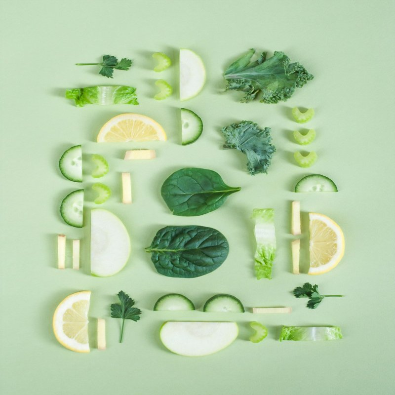

The Coconut Protocol

Hydration in the high-performance era requires moving beyond synthetic powders. The **Coconut Protocol** is our refined framework for leveraging the bio-active potential of the green coconut stand as a primary recovery hub.
Neural Phase Hydration
Traditional "sports drinks" rely on processed sugars and isolated salts. The protocol mandates the use of **live enzymes** and **cellular-matched electrolytes** found only in fresh, unpasteurized coconut water sourced within 4 hours of harvest.
The Alpha Protocol
- Visual Identification: Target green, unblemished shells. A slight weight-to-volume variance indicates optimal enzyme density.
- Thermal Management: Consume chilled but never frozen. High-speed freezing crystallizes the trace minerals, reducing bioavailability.
- The 20-Minute Window: Post-crack, the water begins to oxidize. For maximum performance provison, the protocol requires consumption within 20 minutes of the first breach.
Roadside Sourcing
We've mapped the primary artisans across the North Coast and Central plains. These vendors are not just sellers; they are the frontline providers of our electrolyte infrastructure. Look for the "Alpha Stand" designation—high turnover, sharp cutlass work, and local sourcing.
The Coconut Protocol isn't just about drinking water. It's about respecting the bio-rhythms of the island to fuel the neural demands of the 21st century.